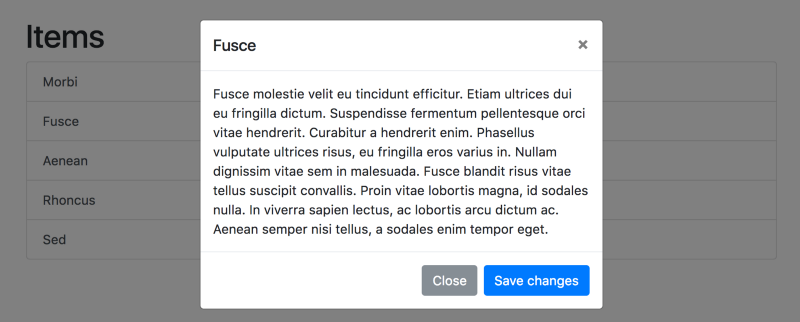
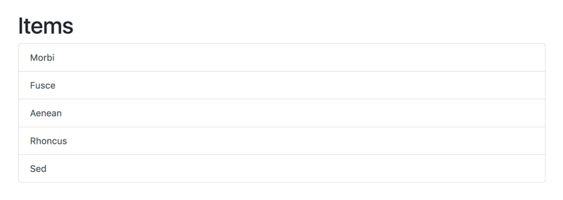

Prototyping with Vue.js and Bootstrap

Let’s say you’re in a situation where you want to create a quick prototype frontend for a web application, something you would throw together in a couple of hours. In this scenario it might be overkill to use a modern build process with a component-based frontend architecture. One good combo can be to use Bootstrap for visuals and Vue.js for interactivity. These frameworks work well for creating prototypes, because they don’t necessarily require any tooling or configuration — you can start with this Bootstrap HTML template, add the script tag for Vue.js, and you’re good to go!
Note: My guess is that there will be some visceral responses here about how everyone should always use npm or yarn to manage dependencies and that no one should ever include individual script tags in their HTML. If that’s your reaction, this article probably isn’t for you — if you feel like you can rapidly prototype while still using your build tools of choice, go for it! This article is for people who want to avoid the overhead of tooling and configuration and still be able to leverage framework features painlessly for prototyping.
Here’s a quick example of rendering a list of five items using some basic Bootstrap classes for styling:
<div class="container">
<h1>Items</h1>
<div class="list-group">
<button type="button" class="list-group-item list-group-item-action">Morbi</button>
<button type="button" class="list-group-item list-group-item-action">Fusce</button>
<button type="button" class="list-group-item list-group-item-action">Aenean</button>
<button type="button" class="list-group-item list-group-item-action">Rhoncus</button>
<button type="button" class="list-group-item list-group-item-action">Sed</button>
</div>
</div>
Not too exciting yet (we’ll get there). Now let’s add some Vue.js to render the same list of items dynamically with a loop:
<div id="app" class="container">
<h1>Items</h1>
<div class="list-group">
<button
type="button"
class="list-group-item list-group-item-action"
v-for="item in items"
>
{{ item.title }}
</button>
</div>
</div>Here we’re using the Vue.js v-for directive to render a list of items, which are defined in the Vue instance in JavaScript:
var app = new Vue({
el: "#app",
data: {
items: [
{title: "Morbi", body: "Morbi nec dictum..."},
{title: "Fusce", body: "Fusce molestie..."},
{title: "Aenean", body: "Aenean et lectus..."},
{title: "Rhoncus", body: "Rhoncus eleifend..."},
{title: "Sed", body: "Sed tellus..."}
]
}
})You can see a working example with the full HTML and JavaScript here.
This may not seem that impressive style-wise, but now we have all of Bootstrap’s visual features at our fingertips! Let’s say we want to be able to click on each item to show a Bootstrap modal with more details about the item. A Bootstrap modal is a <div> that is hidden until something triggers it, usually a button on the page. Here’s the example from Bootstrap’s documentation of a button that activates a modal:
<!-- Button trigger modal -->
<button type="button" class="btn btn-primary" data-toggle="modal" data-target="#exampleModal">
Launch demo modal
</button>
<!-- Modal -->
<div class="modal fade" id="exampleModal" tabindex="-1" role="dialog" aria-labelledby="exampleModalLabel" aria-hidden="true">
<div class="modal-dialog" role="document">
<div class="modal-content">
<div class="modal-header">
<h5 class="modal-title" id="exampleModalLabel">Modal title</h5>
<button type="button" class="close" data-dismiss="modal" aria-label="Close">
<span aria-hidden="true">×</span>
</button>
</div>
<div class="modal-body">
...
</div>
<div class="modal-footer">
<button type="button" class="btn btn-secondary" data-dismiss="modal">Close</button>
<button type="button" class="btn btn-primary">Save changes</button>
</div>
</div>
</div>
</div>What is not immediately apparent is that Bootstrap is toggling the <div> using JavaScript (which was loaded elsewhere as a script in the HTML). The user doesn’t need to write any JavaScript for this example to work — the only thing necessary is the data-toggle="modal" and data-target="#exampleModal" attributes in the button that corresponds with the id="exampleModal" in the modal div.
In order to use this modal with Vue.js, we have to make sure Bootstrap’s JavaScript doesn’t conflict with Vue’s JavaScript. There are 3 different approaches that come to mind:
- Make a Vue.js component for the modal. This would require passing in props for each individual item, as well as toggling the modal using Vue’s events (instead of Bootstrap’s
data-toggleanddata-targetattributes). The rough architecture would look like this example. This is a clean approach, but it seems over-architected for the purposes of making a quick prototype. - Make multiple Bootstrap modals within the loop. This would require using Bootstrap’s
data-toggleanddata-targetattributes in conjunction with using Vue.js to bind a unique id attribute for each modal (otherwise each item would toggle the same modal). This approach works, but it seems wasteful to make multiple modals when you only need one with dynamic content. - Make one Bootstrap modal and keep track of the current item. This would require using Bootstrap’s
data-toggleanddata-targetattributes in conjunction with a Vue event to update the current item when an item is clicked. This seems like the best approach for a prototype, since it allows us to use a single dynamic modal and not have to rewrite Bootstrap’s JavaScript to toggle it.
There is actually a fourth approach, which is to use a library like Bootstrap-Vue, which is essentially code written by someone using the first approach to wrap all of Bootstrap’s components using Vue.js components. Again, a potentially useful approach, but it seems like overkill for just one modal.
Here’s what the code would look like for the third approach — make a single Bootstrap modal and keep track of the current item that was clicked. There’s surprisingly little code to add other than the HTML for the modal itself. The HTML changes as follows:
<div id="app" class="container">
<h1>Items</h1>
<div class="list-group">
<button
type="button"
class="list-group-item list-group-item-action"
data-toggle="modal"
data-target="#exampleModal"
v-for="item in items"
v-on:click="setCurrentItem(item)"
>
{{ item.title }}
</button>
</div>
<!-- Modal -->
<div class="modal fade" id="exampleModal" tabindex="-1" role="dialog" aria-labelledby="exampleModalLabel" aria-hidden="true">
<div class="modal-dialog" role="document">
<div class="modal-content">
<div class="modal-header">
<h5 class="modal-title" id="exampleModalLabel">
</h5>
<button type="button" class="close" data-dismiss="modal" aria-label="Close">
<span aria-hidden="true">×</span>
</button>
</div>
<div class="modal-body">
</div>
<div class="modal-footer">
<button type="button" class="btn btn-secondary" data-dismiss="modal">Close</button>
<button type="button" class="btn btn-primary">Save changes</button>
</div>
</div>
</div>
</div>
</div>Here we’re using Bootstrap’sdata-toggle and data-target attributes, which means we can rely on Bootstrap’s JavaScript to show and hide the modal without any more effort. We’re also using Vue’s v-on:click to set the current item equal to whichever one was clicked. The modal itself displays information about the current item. The corresponding JavaScript looks like:
var app = new Vue({
el: "#app",
data: {
items: [
{title: "Morbi", body: "Morbi nec dictum..."},
{title: "Fusce", body: "Fusce molestie..."},
{title: "Aenean", body: "Aenean et lectus..."},
{title: "Rhoncus", body: "Rhoncus eleifend..."},
{title: "Sed", body: "Sed tellus..."}
],
currentItem: {}
},
methods: {
setCurrentItem: function(item) {
this.currentItem = item
}
}
})Here we’re defining the initial state of the current item (an empty object), as well as defining the method to run when a user click’s on an item (which updates the current item). What’s nice is that the JavaScript here is only concerned about the data and how it transforms; there’s no code here that’s concerned with toggling the modal or manipulating the DOM.
This small example shows how Vue.js works well as a “progressive” framework — it’s very easy to add a script tag and write minimal HTML and JavaScript to get interactive features, and it plays well with other libraries to boot! If you’re a purist who believes that all the JavaScript should be written in Vue.js (instead of utilizing the JavaScript that comes with Bootstrap), there’s nothing stopping you from refactoring this code following all the best practices of a component based architecture — Vue.js handles that gracefully as well.
If you’re interested in learning more about using Vue.js with components, you can check out my Comparing Frontend Approaches series, where I build the same app using various approaches, including Vue.js (using a simple script tag) versus Vue.js using components (using build tools like webpack). But for a quick prototype, it’s hard to beat a simple Vue.js script in conjunction with a visual framework like Bootstrap. Hope you find these tips useful on your journey!
- Next: Modern CSS Explained For Dinosaurs
- Previous: A minimalist guide to tmux